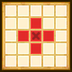
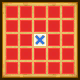

| Lv: | 140 |
|---|---|
| HP: | |
| MP: | |
| ATK: | |
| DEF: | |
| AGL: | |
| WIS: | |
| Move: | |
| Weight: | 65 |
| Weaknesses: |  |
 |
/ |  |
 |
|---|---|---|---|---|---|
| Resistances: |  |
 |
/ |  |
 |
| Immunities: |  |
| Family: |  |
Role: |  |
Element: |  |
|---|
Note: All perks/abilities denoted with an * are using unofficial translations
| Abilities | ||||||
|---|---|---|---|---|---|---|
| Level | Type | Name | MP | Element | Range | Description |
| 1 |  |
Dark One's Awakening* 邪神の目覚め |
32 |  |
 Self |
Heals a major amount of the user's HP and raises damage dealt for 3 turns |
| 31 |  |
Evil Press* イビルプレス |
129 | |
 Front |
Deals major surehit martial damage (290 base potency) to all enemies in area of effect, raises the user's DEF for 3 turns |
| 54 |  |
Calasmist* ニズゼフレア |
120 |  |
 2-4 |
Deals major Zam-type breath damage (312 base potency) to all enemies in area of effect, often envenomates, stuns, or curses |
| 82 |  |
Final Flame | 150 |  |
 Radius 2 |
Deals huge unreflectable Frizz-type martial damage (450 base potency) to all enemies in area of effect (Times usable: 1) |
| Base Perks | ||
|---|---|---|
| Level | Name | Description |
| 1 | Max HP +30 | Raises max HP by 30 |
| 1 | Max MP +15 | Raises max MP by 15 |
| 1 | Dark Shroud of Shadows* 闇の衣・邪 |
Battle start: Prevents incoming attacks from dealing over 30% of the unit's max HP for 10 turns |
| 110, 120, 130, 140 | Martial Potency/Recovery +2% | Raises martial potency/recovery by 2% |
| 110, 120, 130, 140 | Breath Potency/Recovery +2% | Raises breath potency/recovery by 2% |
| Awakening Perks | ||
|---|---|---|
| Awakening | Name | Description |
| 1 | Hold Fire | Action start on even turns until turn 10: Heals 15% of max HP and restores 8% of max MP, raises AGL and damage dealt for 3 turns Action start on even turns until turn 10: Attacks with Final Flame if enemy is within 2-radius area |
| 2 | Zap Res +25 | Raises Zap resistance by 25 |
| 3 | Immutable Heart* 不動のこころ |
When afflicted with a status ailment: Removes some status ailments, 1 time per battle This perk can be triggered by non-damage dealing abilities or attacks by allies |
| 3, 5 | Martial Potency/Recovery +5% | Raises martial potency/recovery by 5% |
| 3, 5 | Breath Potency/Recovery +5% | Raises breath potency/recovery by 5% |
| 4 | Woosh Res +25 | Raises Woosh resistance by 25 |
| 5 | Immortal Darkness* 不滅の闇 |
When attacked by enemy: Heals 10% of the user's max HP |
| 1, 2, 3, 4, 5 | Stats Up | Raises HP, MP, ATK, DEF, WIS and AGL by 5% |